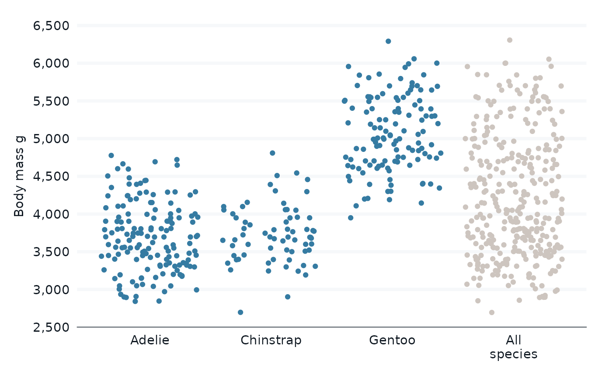

Bind all the data to itself by a variable for plotting of groups against all data.
Usage
bind_all(
data,
...,
by,
all_value = "All",
all_value_after = Inf,
group_value = "Groups",
name = "all_or_groups"
)Arguments
- data
A data frame or tibble.
- ...
Provided to require argument naming, support trailing commas etc.
- by
An unquoted variable.
- all_value
A character value for the all value. Defaults to "All".
- all_value_after
A number for where the all value should be placed. Either 0 for first or Inf for last.
- group_value
A character value for the group value. Defaults to "Groups".
- name
A variable name. Defaults to
all_or_groups.
Examples
library(dplyr)
library(stringr)
library(tidyr)
library(ggplot2)
library(palmerpenguins)
penguins |>
bind_all(by = species) |>
distinct(species, all_or_groups)
#> # A tibble: 4 × 2
#> species all_or_groups
#> <fct> <fct>
#> 1 Adelie Groups
#> 2 Gentoo Groups
#> 3 Chinstrap Groups
#> 4 All All
penguins |>
bind_all(by = species,
all_value = "All\nspecies",
group_value = "Species",
) |>
distinct(species, all_or_groups)
#> # A tibble: 4 × 2
#> species all_or_groups
#> <fct> <fct>
#> 1 "Adelie" "Species"
#> 2 "Gentoo" "Species"
#> 3 "Chinstrap" "Species"
#> 4 "All\nspecies" "All\nspecies"
set.seed(123)
penguins |>
bind_all(by = species, all_value = "All\nspecies", group_value = "Species") |>
gg_jitter(
x = species,
y = body_mass_g,
col = all_or_groups,
col_palette = c(blue, grey),
) +
theme(legend.position = "none") +
labs(x = NULL)
#> Scale for colour is already present.
#> Adding another scale for colour, which will replace the existing scale.
#> Warning: Removed 4 rows containing missing values or values outside the scale range
#> (`geom_point()`).

set.seed(123)
penguins |>
bind_all(by = species, all_value = "All\nspecies", group_value = "Species") |>
gg_jitter(
x = species,
y = body_mass_g,
col = all_or_groups,
facet = all_or_groups,
col_palette = c(blue, grey),
facet_layout = "grid",
facet_space = "free_x",
facet_scales = "free_x",
) +
theme(legend.position = "none") +
theme(strip.text = element_blank()) +
labs(x = NULL)
#> Scale for colour is already present.
#> Adding another scale for colour, which will replace the existing scale.
#> Warning: Removed 4 rows containing missing values or values outside the scale range
#> (`geom_point()`).
set.seed(123)
penguins |>
bind_all(by = species, all_value = "All\nspecies", group_value = "Species") |>
drop_na(sex) |>
mutate(sex = str_to_sentence(sex)) |>
gg_violin(
x = species,
y = body_mass_g,
facet = all_or_groups,
col = all_or_groups,
col_palette = c(blue, grey),
facet_layout = "grid",
facet_space = "free_x",
facet_scales = "free_x",
) +
theme(strip.text = element_blank()) +
theme(legend.position = "none") +
labs(x = NULL)
#> Scale for colour is already present.
#> Adding another scale for colour, which will replace the existing scale.
set.seed(123)
penguins |>
drop_na(sex) |>
mutate(sex = str_to_sentence(sex)) |>
bind_all(by = species, all_value = "All\nspecies", group_value = "Species") |>
gg_violin(
x = species,
y = body_mass_g,
col = all_or_groups,
facet = sex,
col_palette = c(blue, grey),
) +
theme(legend.position = "none") +
labs(x = NULL)
#> Scale for colour is already present.
#> Adding another scale for colour, which will replace the existing scale.